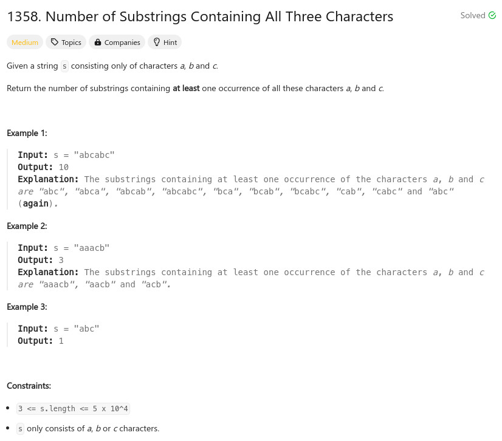

參考資訊：
https://www.cnblogs.com/grandyang/p/17796915.html
題目：

int min(int a, int b)
{
return (a > b) ? b : a;
}
int numberOfSubstrings(char* s)
{
const int MAX_LEN = 3;
int r = 0;
int cc = 0;
int cnt[3];
int len = strlen(s);
for (cc = 0; cc < 3; cc++) {
cnt[cc] = -1;
}
for (cc = 0; cc < len; cc++) {
cnt[s[cc] - 'a'] = cc;
r += 1 + min(min(cnt[0], cnt[1]), cnt[2]);
}
return r;
}